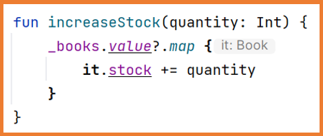

In Android, the main thread is responsible for displaying the user interface and managing the interactions with the application.
This means that if the main thread runs a heavy or asynchronous task, the user interface will freeze
and the user won't be able to interact with the device until the task finishes.
Heavy tasks: tasks that take a long time.
Asynchronous tasks: tasks that can be performed in the background.
Coroutines
Kotlin provides coroutines to perform actions without blocking the main thread.
Coroutines are more efficient than threads because they group available threads to execute instructions with different
configurations (context + dispatcher).
Additionally, the number of threads is limited, but the number of coroutines that can be launched is almost infinite.
So when you want to execute a set of instructions and avoid blocking the main thread, you need to create a coroutine
and specify the configuration in which it will run, allowing the system to manage the coroutine using as many threads as needed.
Suspending functions are those that block the execution of the function until a specific instruction is finished.
These functions must always be executed inside a coroutine or within a coroutine scope (coroutine scope)
or inside another suspend function.
Android Studio notifies that an instruction may block the function's execution.
Usage
A suspend function is a function that can be "paused" and then resumed without blocking the current thread. This makes them ideal for time-consuming operations, such as:
Database queries.
Web service calls.
Input/output (I/O) operations.
Complex tasks that need to run in the background.
Basic Syntax
suspend fun functionName(): ReturnType {
// Function code
}
Suspend functions simplify the handling of asynchronous operations by eliminating the need for complex callbacks.
Example: Imagine you are simulating a data download that takes 2 seconds.
suspend fun downloadData(): String {
delay(2000) // Simulates a 2-second delay
return "Data downloaded"
}
fun main() {
runBlocking { //This is an special coroutine that do that main thread waits for it.
println("Download starting...")
val result = downloadData() //Here the coroutine is blocked
println("Result: $result")
}
}
Explanation:
The downloadData function is a suspend function.
delay(2000) pauses the execution for 2 seconds without blocking the current thread.
The runBlocking function is used to start a coroutine in the main thread. This is only for testing;
in a real environment (e.g., Android), you would use other contexts such as launch or async.
The program prints "Download starting...", waits for 2 seconds, and then prints the result.
Coroutine Context
Defines, among other things, the work and dispatcher (sets of threads) that will be used to perform the task.
var job=Job()
val coroutineContext: CoroutineContext = Dispatchers.IO + job
launch(coroutineContext){
//Actions
}
Coroutine Scope
Sets the execution scope for the coroutine, i.e., where the coroutine will be used.
var job=Job()
val coroutineContext: CoroutineContext = Dispatchers.IO + job
val coroutineScope = CoroutineScope(coroutineContext)
coroutineScope.launch{
//Actions
}
....
coroutineScope.cancel("....")
Typically, the CoroutineScope is provided
(rememberCoroutineScope, viewModelScope, ...) where it's used, but we can create our own.
Canceling Coroutines
Using rememberCoroutineScope and viewModelScope
you can execute coroutines with launch (among other builders).
When the coroutine is executed inside a @Composable element, the coroutine will be canceled if the screen is no longer visible on the screen.
With the launch method, you can store the coroutine's identifier to cancel it later if needed.
This is especially useful for coroutines executed inside a ViewModel.
var myCoroutinJob:Job = Job()
myCoroutinJob = viewModelScope.launch{
//Actions to perform in the coroutine
}
....
//You can cancel the coroutine using its job. (Among other actions)
myCoroutinJob.cancel()
Asynchronous Requests
They allow you to execute several actions in the background and wait for them concurrently, avoiding unnecessary time wastage
since they are executed in parallel.
//runBlocking creates a coroutine that blocks the thread until the others finish
//It is only advised for testing.
fun main() = runBlocking{
//Note: It's not an integer, it's a deferred
val datoA = async{
println("Start A")
delay(2000)
println("End A")
25
}
//Note: It's not an integer, it's a deferred
val datoB = async{
println("Start B")
delay(4000)
println("End B")
60
}
//Wait for both to finish, since they are deferred we use await()
val total = datoA.await() + datoB.await()
println("${datoA.await()} + ${datoB.await()} = $total")
}
Side Effects
As previously studied, Jetpack Compose performs recompositions of the user interface when state changes occur.
Sometimes the application recomposes more or fewer times than necessary
or even when recomposing, code that should not be executed runs.
All these unwanted situations are called Side Effects.
All components of the application should avoid side effects,
but there are times when side effects are needed, such as for one-time events like showing a notification or
navigating to a screen if a state meets a condition.
The following code produces a side effect:
When the button is pressed, the message changes.
The Toast is shown whenever the message is not empty.
Once the button is pressed and the message is no longer empty, from then on, when the TextField changes,
the Toast will always be shown.
To solve these problems, Effects Handlers were created
which allow you to execute these actions in a controlled environment.
Effects Handlers also facilitate the use of coroutines in Jetpack Compose.
The available Effects Handlers are:
LaunchedEffect
RememberCoroutineScope
derivedStateOf
SideEffect
RemindUpdatedState
DisposableEffect
produceState
snapshotFlow
LaunchedEffect
A LaunchedEffect block is executed the first time the component it's included in is composed.
After that, it will only execute (recompose) if any of the parameters it receives change.
LaunchedEffect supports up to three parameters key (key1, key2, key3) or a list of keys.
In the previous example, the block will only execute once (when the component is first composed) even if the SplashScreen function is recomposed, as the parameter it receives will always have the same value (true).
A LaunchedEffect block is a coroutine, so it also allows you to execute suspending functions within a @Composable component.
Thus, if the block is running and undergoes recomposition, the coroutine that was running is paused and starts over.
The coroutine cancels its execution when the LaunchedEffect block leaves the composition (is no longer on screen).
Applying it to the previous login example:
The LaunchedEffect block will execute every time the state message changes.
This first approach won't work properly because the message only changes when it goes from "User logged in!"
to "Error" and vice versa. So if an error occurs and
when the data changes, the error remains, the message won't be shown again.
To fix this, simply clear the message after showing the Toast.
Complete Login Example:
RememberCoroutineScope
RememberCoroutineScope allows you to get a safe scope (scope)
to execute a coroutine.
It is used when you need to execute a suspending function outside the scope of a @Composable component
such as inside onClick.
You cannot use LaunchedEffect if you're not inside a @Composable context.
In this case, the scope of a coroutine is needed.
First, you get the coroutine's scope with rememberCoroutineScope and
then to execute the coroutine, you use the launch function.
This Effect Handler has already been used to move the scroll automatically
Moving the scroll is a suspending function, and when performing this action by clicking a button, the scope of the coroutine is needed.
When using the launch function, the coroutine runs on the main thread, which can sometimes be problematic as it could block the user interface.
The launch function allows you to specify the context in which the coroutine should run:
Dispatchers.Main: main thread (used for the user interface).
Dispatchers.IO: primarily for input/output tasks.
Dispatchers.Default: managed by the operating system (same as not specifying any dispatcher).
Dispatchers.Unconfined: any thread without control over it (not recommended).
If the actions performed in the launch function are related to the user interface, it is best to either not specify anything or to specify Dispatchers.Main.
If the actions performed in the launch function are intended to obtain data from external sources or storage, or if the actions are not related to the user interface, it is best to specify Dispatchers.IO.
derivedStateOf
The handler derivedStateOf allows you to create a state that depends on one or more other states.
This way, unnecessary extra recompositions are avoided.
It could be said that derivedStateOf does not trigger recompositions until the state value changes from its previous value.
To better understand the need for derivedStateOf, let’s study the following example:
When the username state changes, the isUsernameValid function runs
which will change the value of buttonEnabled, and the button will recompose every time a letter is typed.
Does it make sense to recompose the button if buttonEnabled is
true and when you type another letter, it remains true?
By indicating that buttonEnabled is a derived state of another, unnecessary recompositions are avoided.
The button will only recompose when the value of buttonEnabled changes from true to false or vice versa.
If the value of buttonEnabled is true and when typing another letter it remains true, the view will not be recomposed.
Android Architectures
When developing applications of any kind, choosing the right architecture to use is very important.
The most common approach is to use an architecture that separates the application logic (programming) from the views (graphical interface).
In this way, the views are responsible for displaying the interface (rendering), while the logic can be separated into other components where the application's functionality is programmed.
With this separation, it will be easier to work with the logic, make changes, and perform tests later on…
The architectures most commonly used in Android are:
MVC – Model View Controller
MVP – Model View Presenter
MVVM – Model View ViewModel
MVC
MVC -> Model View Controller:
The MVC architecture promotes organizing the application into three distinct
and loosely coupled parts.
Model: this component works with data (database access).
View: responsible for organizing the data obtained from the model and creating the graphical interface to display to the user.
Controller: manages requests to the application.
A loose coupling means that changes in one part of the code have minimal effect on other parts.
In the best case, when using the MVC pattern, a change will not affect other parts.
There are many implementations of the MVC architecture; in the Android implementation, both the controller and the view are defined in the same place (Activity or Fragment), and both depend on the model.
MVC
One of the disadvantages of this architecture is that all responsibility falls on the same element (Activity or Fragment).
This can cause performance issues if there is a heavy task running on the main thread.
MVP
MVP -> Model View Presenter:
It better organizes files and changes the way the three components work together.
Model: same as in MVC.
View: the Activity or Fragment is considered part of the view and
is no longer located alongside the Controller.
Presenter: similar to the Controller in MVC, but is responsible for orchestrating everything that happens.
Typically, there is one Presenter per Activity or Fragment.
MVP
MVVM
MVVM -> Model View ViewModel:
Model: same as in MVC.
View: responsible for displaying the data.
ViewModel:
Wraps the model and prepares observable data for the view.
Provides bindings to the view to send events to the model.
Changes in it automatically update the view and vice versa.
The ViewModel is responsible for:
Responding to interactions in the view
Accessing data (model)
Notifying the view of changes in the data.
Additionally, ViewModel survives configuration changes like orientation changes,
meaning that the information stored in the ViewModel is preserved at all times.
LiveData
Although ViewModel can work with states as we've used them until now,
it is recommended to use the LiveData class because it is optimized for the lifecycle of the Activity.
LiveData allows you to hold data that can be observed as states.
It is specifically designed to be used in Activities, Fragments, or
Services so that it only notifies observers if they are currently running
(active lifecycle state).
It allows for device orientation changes without losing the observed data.
Android provides the LiveData and MutableLiveData classes to store any type of data and observe its changes
Android automatically provides two methods for storing data in a LiveData:
Using its value property (uses the main thread).
Using its postValue method (uses a background thread).
The postValue method should always be used when working from a coroutine, and the context Dispatchers.IO should also be specified.
ViewModel and LiveData
From now on:
If a component needs a state and that state is not needed anywhere else in the application,
the component will contain the state (stateful).
If a component needs a state and this state is needed in other parts of the application,
the component will not contain the state (stateless) and will subscribe to a LiveData provided by the ViewModel.
Practical Case
We will follow step by step how to create an application using ViewModel, in this case, the application will be a
Book List. The first thing we will do is create the project in the selected folder with the default Compose template.
Add dependencies
After creating the project, it's necessary to add the required dependencies. For this example, the dependencies for navigation, serialization, extended icons, and livedata will be added:
Remember to click Sync Now after making these changes.
Data Model
To store the data, create the file Book.kt in a package called model,
which will contain a data class defining the Book object and a static method to retrieve all books.
data class Book(
val title: String = "",
val author: String = "",
var favorite: Boolean = false,
var visible: Boolean = true,
) {
companion object{
fun getData() : List<Book> {
return listOf(
Book("Ready Player One", "Ernest Cline"),
Book("El juego de Ender", "Orson Scott Card"),
Book("El señor de los anillos", "J. R. R. Tolkien"),
Book("La historia interminable", "Michael Ende"),
Book("Juego de tronos", "George R. R. Martin"),
Book("El color de la magia", "Terry Pratchett"),
Book("La sangre de los elfos", "Andrzej Sapkowski"),
Book("Dune", "Frank Herbert"),
Book("Una educación mortal: Primera lección de Escolomancia", "Naomi Novik"),
Book("El nombre del viento", "Patrick Rothfuss"),
Book("Harry Potter y la piedra filosofal", "J. K. Rowling"),
Book("La quinta ola", "Rick Yancey"),
Book("Las crónicas de Narnia", "C. S. Lewis"),
)
}
}
}
View Model
In a package called viewmodel, create the file BookViewModel.kt,
which will contain a class for the ViewModel with all the necessary LiveData
(states) and the methods to modify those LiveData.
class BookViewModel : ViewModel() {
// Los LiveData (estados) solo deben de poder cambiar desde el View Model, por ello se declaran private.
// Para acceder al valor de los estados desde el exterior del View Model se crea una variable no mutable
// que almacenará el mismo valor que la variable privada
// Lista de libros
private val _books = MutableLiveData<List<Book>>()
val books: LiveData<List<Book>> = _books
// Libro seleccionado
private val _selectedBook = MutableLiveData<Book>()
val selectedBook: LiveData<Book> = _selectedBook
// Variable para indicar que se están obteniendo los datos del repositorio
private var _isLoading = MutableLiveData<Boolean>()
val isLoading: LiveData<Boolean> = _isLoading
init { // Cuando se instancia un objeto BookViewModel tras llamar al constructor se ejecuta el bloque init
loadBookList()
}
// Función para reutilizar este código en una futura mejora en la que se podrá recargar la lista de libros
fun loadBookList() {
// Corrutina: coroutineScope
viewModelScope.launch(Dispatchers.IO) {
_isLoading.postValue(true)
delay(2000)
_books.postValue(Book.getData())
_isLoading.postValue(false)
}
}
fun deleteBook(book: Book) {
// Con API o BBDD se mandaría el id y se borraría de la BBDD
// A continuación se actualiza la lista de libros eliminando el libro
_books.value = _books.value?.filter { it != book }
}
// Al pulsar sobre un libro se almacena como seleccionado.
fun onBookClicked(book: Book) {
_selectedBook.value = book
}
// Para marcar/desmarcar el libro como favorito
fun markAsFavorite(book: Book) {
_books.value?.map {
if (it == book) it.favorite = !it.favorite
}
}
fun searchBook(searchString: String) {
val searchList = mutableListOf<Book>()
_books.value?.forEach {
// val book = it.copy()
// book.visible = book.title.contains(searchString, true)
// searchList.add(book)
// Estas líneas son similares a las comentadas
val book = it.copy(visible = it.title.contains(searchString, true))
searchList.add(book)
}
_books.value = searchList
}
fun resetSearchList() {
val searchList = mutableListOf<Book>()
_books.value?.forEach {
// book.visible = true
// searchList.add(book)
// Estas líneas son similares a las comentadas
val book = it.copy(visible = true)
searchList.add(book)
}
_books.value = searchList
}
}
Navigation and Routes
In a package called navigation, create the files Routes.kt
and Navigation.kt, where the application's navigation will be defined.
Routes.kt
sealed class Routes {
// Ruta para la lista de libros
@Serializable
object Main
// Ruta para la información de un libro
@Serializable
object BookInfo
}
// Componente propio para tener un Scaffold unificado en toda la aplicación
@Composable
fun AppScaffold(
showBackArrow: Boolean = false,
onBlackArrowClick: () -> Unit = {},
content: @Composable () -> Unit
) {
Scaffold(
topBar = {
AppTopBar(
showBackArrow = showBackArrow,
onClickBlackArrow = onBlackArrowClick,
)
},
) { paddingValues ->
Column(
modifier = Modifier.padding(paddingValues)
) {
Box(
modifier = Modifier.weight(9f).fillMaxWidth()
) {
content()
}
HorizontalDivider(
modifier = Modifier.background(MaterialTheme.colorScheme.onPrimary).height(2.dp)
)
AuthorInfo(modifier = Modifier.padding(vertical = 4.dp).weight(1f))
}
}
}
AppTopBar
// Componente propio para la TopAppBar del Scaffold usado en la APP
@OptIn(ExperimentalMaterial3Api::class)
@Composable
fun AppTopBar(
showBackArrow: Boolean = false, // Sirve para indicar si se mostrará o no la flecha atrás
onClickBlackArrow: () -> Unit,
) {
CenterAlignedTopAppBar(
title = {
Row(
verticalAlignment = Alignment.CenterVertically
) {
Icon(imageVector = Icons.Default.LocalLibrary, contentDescription = null)
Spacer(modifier = Modifier.width(16.dp))
Text(
text = "Lista de libros",
fontSize = 30.sp
)
Spacer(modifier = Modifier.width(16.dp))
Icon(imageVector = Icons.Default.LocalLibrary, contentDescription = null)
}
},
navigationIcon = {
if (showBackArrow) {
IconButton(
// onClick = { onClickBlackArrow() }
onClick = onClickBlackArrow
) {
Icon(
imageVector = Icons.AutoMirrored.Filled.ArrowBack,
contentDescription = "Go back",
tint = MaterialTheme.colorScheme.onPrimary
)
}
}
},
colors = TopAppBarDefaults.largeTopAppBarColors(
containerColor = MaterialTheme.colorScheme.primary,
titleContentColor = MaterialTheme.colorScheme.onPrimary
)
)
}
AuthorInfo
// Componente propio para mostrar la información del autor
@Composable
fun AuthorInfo(modifier: Modifier = Modifier) {
Row(
modifier = Modifier
.fillMaxWidth()
.background(MaterialTheme.colorScheme.primary)
.then(modifier),
horizontalArrangement = Arrangement.spacedBy(
20.dp,
Alignment.CenterHorizontally
),
verticalAlignment = Alignment.CenterVertically,
) {
Image(
painter = painterResource(id = R.drawable.rick),
contentDescription = "Foto de Rick",
modifier = Modifier
.clip(CircleShape)
.border(
width = 3.dp,
color = MaterialTheme.colorScheme.onPrimary,
shape = CircleShape
)
.width(60.dp)
)
Text(
text = "Rick Sanchez",
fontSize = 35.sp,
fontWeight = FontWeight.Bold,
color = MaterialTheme.colorScheme.onPrimary
)
}
}
MainScreen
MainScreen
In a package called mainscreens, create the file MainScreen.kt
for the main screen interface that will display the list of books.
@Composable
fun MainScreen(
onBookClick: (Book) -> Unit = {},
bookViewModel: BookViewModel
) {
AppScaffold(showBackArrow = false) {
// Suscripción a la lista de libros del ViewModel
val books: List<Book> by bookViewModel.books.observeAsState(initial = emptyList())
// Suscripción a la variable que indica si se están consiguiendo la lista de libros
val isLoadingBooks: Boolean by bookViewModel.isLoading.observeAsState(initial = false)
Column(
modifier = Modifier
.fillMaxWidth()
.background(MaterialTheme.colorScheme.primary)
) {
HorizontalDivider(
thickness = 2.dp,
color = MaterialTheme.colorScheme.onPrimary,
)
LazyColumn(
modifier = Modifier
.fillMaxWidth()
.background(MaterialTheme.colorScheme.primary)
.padding(vertical = 8.dp)
.weight(7.7f)
) {
items(books) { book ->
if (book.visible) {
BookCard(
book = book,
onBookClick = {
// Al clicar sobre el libro se actualiza en el ViewModel el libro seleccionado
bookViewModel.onBookClicked(book)
// Se ejecuta el código recibido en la lamnda: navegar a la ventana de información
onBookClick(it)
},
onBookDelete = {
// Al clicar sobre el icono de papelera se elimina el libro de la lista del ViewModel
bookViewModel.deleteBook(book)
}
)
}
}
}
Row(
horizontalArrangement = Arrangement.End,
verticalAlignment = Alignment.CenterVertically,
modifier = Modifier.fillMaxWidth().weight(.3f)
) {
Text(
text = "Recarga la lista de libros",
color = MaterialTheme.colorScheme.onPrimary
)
IconButton(onClick = {
bookViewModel.loadBookList()
}) {
Icon(
imageVector = Icons.Default.Refresh,
contentDescription = "Recargar",
tint = MaterialTheme.colorScheme.onPrimary
)
}
}
// Cuando la variable del ViewModel es true es que se está cargando la lista de libros
// en ese caso se mostrará un texto y una línea de progreso indicando la carga
if (isLoadingBooks) {
Column(
verticalArrangement = Arrangement.Center,
horizontalAlignment = Alignment.CenterHorizontally,
modifier = Modifier
.fillMaxSize()
.background(MaterialTheme.colorScheme.primary)
) {
Text(
text = "Loading...",
fontSize = 40.sp,
fontWeight = FontWeight.Bold,
color = MaterialTheme.colorScheme.onPrimary
)
Spacer(modifier = Modifier.height(20.dp))
CircularProgressIndicator(
color = MaterialTheme.colorScheme.onPrimary
)
}
}
}
}
}
In a package called screens, create the file BookInfoScreen.kt
to display detailed information about the book from the list that was clicked.
@Composable
fun BookInfoScreen(
onBackArrowClick: () -> Unit = {},
bookViewModel: BookViewModel
) {
AppScaffold(
showBackArrow = true,
onBlackArrowClick = onBackArrowClick
) {
// Suscripción al libro seleccionado del ViewModel
val book: Book by bookViewModel.selectedBook.observeAsState(Book())
var favorite by rememberSaveable { mutableStateOf(book.favorite) }
Column(
modifier = Modifier
.fillMaxWidth()
.background(MaterialTheme.colorScheme.primaryContainer)
.padding(8.dp)
) {
Row(
horizontalArrangement = Arrangement.Start,
verticalAlignment = Alignment.CenterVertically,
modifier = Modifier.fillMaxWidth()
) {
Column {
Icon(
imageVector = Icons.AutoMirrored.Filled.MenuBook,
contentDescription = "book"
)
if (favorite) {
Spacer(modifier = Modifier.height(4.dp))
Icon(
imageVector = Icons.Default.Star,
contentDescription = "book",
tint = Color(0xFFFB8C00)
)
}
}
Spacer(modifier = Modifier.width(20.dp))
Text(
text = book.title,
fontSize = 30.sp,
lineHeight = 38.sp
)
}
Spacer(modifier = Modifier.height(10.dp))
Text(
text = book.author,
fontSize = 16.sp
)
TextButton(onClick = {
// bookViewModel.markAsFavorite(book)
favorite = !favorite
}) {
Text(text = if (favorite) "Quitar favorito" else "Marcar favorito")
}
Row(
modifier = Modifier
.fillMaxSize()
.background(MaterialTheme.colorScheme.tertiary)
.padding(8.dp)
) {
Text(
text = "Aquí se mostrará la información detallada del libro.",
color = MaterialTheme.colorScheme.onTertiary
)
}
}
}
}
Problem with ViewModel and LiveData
When LiveData stores a list of objects, even if the list is modified, the changes are not notified to the observers
so no recomposition happens:

This happens because although the list has been modified, the instance is the same. To solve this, a new list must be created
and copies of the elements in the list must be made, modified, and added to the new list.
About LiveData
If we are going to modify the value from another thread other than the main, we must do it with myLiveData.postValue(value)
instead of myLiveData.value = value. That is, if we are inside a coroutine and change the value of LiveData, we will use
postValue to notify correctly.
_usernameLD.postValue("Another value")
About ViewModel
If there is a ViewModel that is shared by all Screens, you can create the ViewModel in MainActivity using "by"
val workoutViewModel by viewModels()
Or in the Navigation component using "=remember":
val workoutViewModel = remember {
WorkoutViewModel()
}
If there is a ViewModel that is used only by some Screens (not all), create the ViewModel in Navigation using "=remember" and pass it to the Screens that need it
If there is a ViewModel that is only used in one Screen, create the ViewModel in that Screen using "=remember". (You can also use the viewModel()
function)
val workoutViewModel= viewModel(){
//If our ViewModel constructor has an input parameter.
WorkoutViewModel(3)
}
Or simply
//No initial input parameter
val workoutViewModel = viewModel(WorkoutViewModel::class.java)
Replicate the book list example from the notes, but in the main window, add a photo of yourself (ID style) at the bottom and your full name.
Additionally, add the necessary functionality to mark/unmark an item as a favorite from the item information screen. The main screen should display whether the item is marked as a favorite.
It should look similar to this:
Here is a possible implementation. Note that a search element has been added.